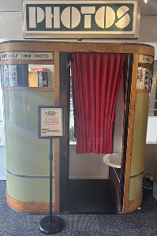

The second photo booth I tried was also called "Photos", but this one had a distinct green sign. This time, we were more prepared. The moment we paid, we struck our poses, ready to capture the perfect shot even if the timing of each snapshot remained unpredictable. Once the photos were taken, we eagerly waited for them to develop, carefully letting them dry to avoid smudging. As the images appeared, I realized this booth was my favorite of all the ones I tried that day.
>
The colors had a slightly yellowish tint, giving the pictures a charming vintage aesthetic. While some might see this as a flaw, I thought it added character, making the photos feel nostalgic. The background also played a big role in making our poses pop, giving the final strip a polished, well-balanced look. For just $5, this photo booth delivered a fun and memorable experience for 4 poses in 1 photo strip. While the color tone wasn’t perfect, it contributed to the booth’s unique appeal. Overall, I’d rate it a solid 5 out of 5. If you’re looking for a photo booth that offers a touch of retro charm while still capturing sharp images, this one is definitely worth trying!